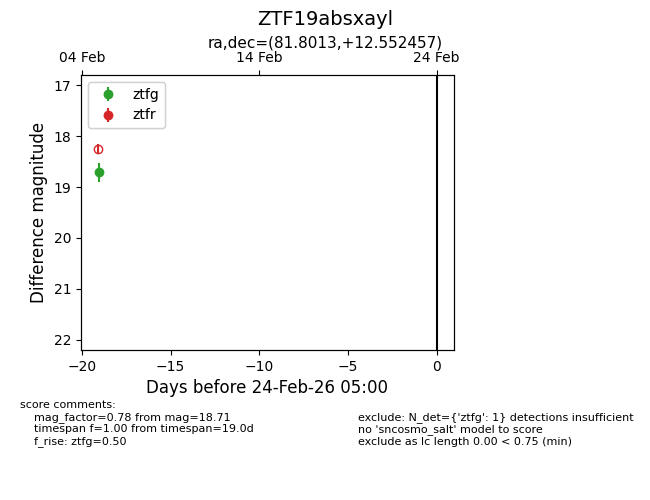
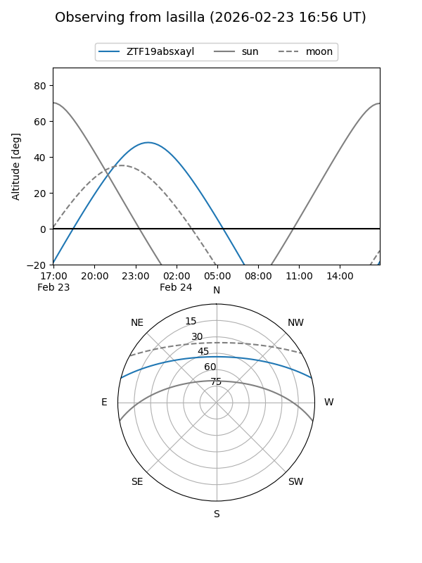
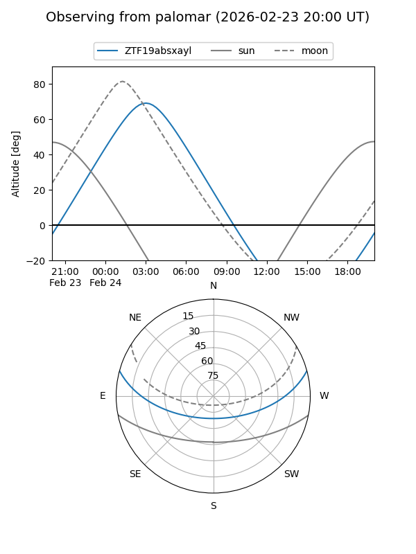

ZTF19absxayl
Target ZTF19absxayl at 2026-02-24 09:08
Aliases and brokers:
FINK: link
Lasair: link
ALeRCE: link
alt names
ZTF19absxayl (ztf,fink_ztf)
Coordinates:
equatorial (ra, dec) = 81.8013,+12.55246
equatorial (HMS+DMS) = 05:27:12.32,+12:33:08.84
galactic (l, b) = (191.7302,-12.30068)
Flags:
Photometry:
last ztfg=18.71
1 ztfg detections
Lightcurve

Visibility


Additional plots